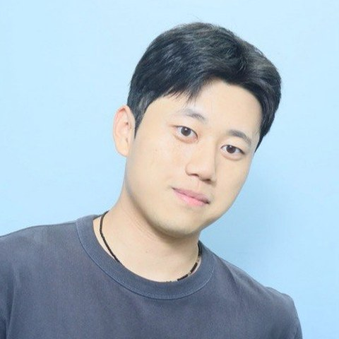

Seokhyun Lee이석현
I work on fundamental questions in machine learning, often ones outside the usual framing.
Integrated M.S./Ph.D. student at Actionable Intelligence Lab, Korea University

About
I am an integrated M.S./Ph.D. student in the Department of Artificial Intelligence at Korea University, advised by Prof. Changhee Lee. I received my B.S. from Chung-Ang University, where I graduated as valedictorian.
I am more interested in fundamental questions than in incremental gains on a benchmark, and I like stepping outside the way a problem is usually posed. That has taken me across several areas: how a time series should be tokenized so one model can move freely between coarse trends and fine detail, how to explain what black-box language models and time-series classifiers rely on, and what it means for society when people become locked in to AI systems.
News
Publications
* Equal contribution
Education
- Korea UniversityMar 2025 – present Integrated M.S./Ph.D., Department of Artificial Intelligence. Advisor: Prof. Changhee Lee
- Chung-Ang University B.S. in Artificial Intelligence. Graduated as valedictorian
Honors and talks
- Presentation of TimeTok, ICTC 20262026
- Spotlight paper, ICML 20262026 Position: AI Lock-In Is in Progress, and We Must Be Prepared
- Valedictorian, Chung-Ang University